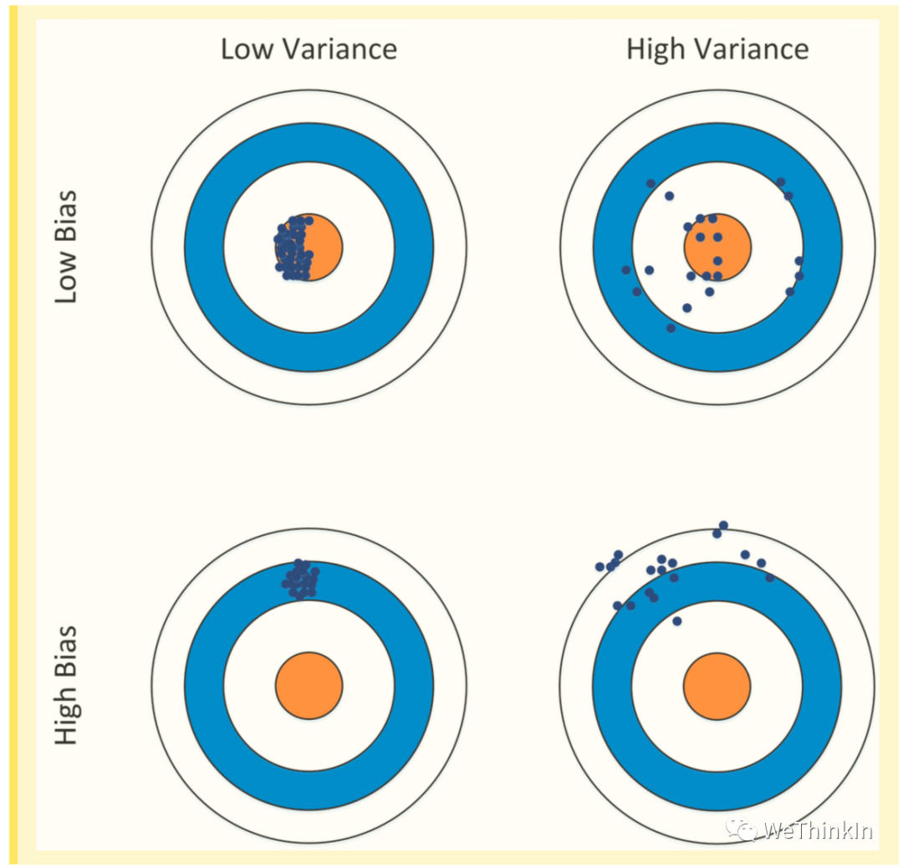

机器学习基础概念知识点
created: 2025-01-25T00:41 updated: 2025-01-26T02:20
目录
- 1.什么是机器学习？
- 2.机器学习有哪些学习方式？
- 3.什么是模型的偏差和方差？
- 4.训练集/验证集/测试集划分
- 5.什么是奥卡姆剃刀原理？
- 6.什么是没有免费的午餐定理？
- 7.判别式模型和生成式模型的本质区别？
- 8.如何理解：“数据和特征决定了机器学习的上限，而模型和算法只是逼近这个上限”这个行业基本认知？
- 9.什么是AutoML？
- 10.什么是熵？
- 11.什么是交叉熵？
- 12.什么是KL散度？
- 13.耦合和解耦的思想如何在机器学习中实践？
- 14.什么是代价函数及其意义？
- 15.什么是二次代价函数？
- 16.什么是交叉墒代价函数？
- 17.什么是对数似然代价函数？
- 18.介绍一下机器学习中的特征编码与特征解码的概念
- 19.机器学习中的Embeddings特征的本质是什么？
- 20.AI行业主要有哪些核心的数据模态？
- 21.机器学习中数据增强的本质是什么？
- 22.机器学习中音频数据有哪些特点？
- 23.什么是机器学习中的全局最优和局部最优问题？
- 24.什么是机器学习中的对比学习？
- 25.机器学习中训练集、验证集、测试集之间有哪些区别？
1.什么是机器学习？机器学习一共有哪些学习方式？
机器学习（Machine Learning）是人工智能的一个子领域，早在1950年阿兰·图灵（Alan Turing）提出了图灵测试，探讨了机器是否能够表现出智能行为。在1952年Arthur Samuel 在IBM工作期间开发了一个具有学习能力的西洋跳棋程序，这个程序可以在不断对弈中提高自己的水平，Arthur Samuel也因此正式提出了“机器学习”的概念。
机器学习技术专注于让计算机系统能够自动从数据中进行学习和进步，而不需要显式地持续编程。机器学习的核心在于数据、算法和模型，这些算法和模型可以通过分析数据和识别数据中的模式进行决策。
机器学习技术目前已经在AIGC、传统深度学习、自动驾驶三个领域全面落地，发展出Stable Diffusion、ChatGPT、Sora、Transformers、YOLO、GAN、U-Net、ResNet、随机森林、支持向量机、决策树、逻辑回归、感知机等实用算法，开始帮助人类完成各种各样的脑力任务。
2.机器学习有哪些学习方式？
目前数据的情况，机器学习的学习方式可以分为 监督学习(supervised learning)、无监督学习(unsupervised learning)，半监督学习(semi-supervised learning)、弱监督学习(weakly supervised learning)、强化学习（Reinforcement Learning）、自监督学习（Self-Supervised Learning）、联邦学习（Federated Learning） 等。
-
监督学习（Supervised Learning）：
- 定义：监督学习是一种机器学习方法，其中模型在训练过程中使用带有标签的数据，即每个输入数据都有对应的输出标签。目标是学习从输入到输出的映射关系，能够对新输入进行准确预测。
- 目标：学习从输入到输出的映射关系，能够对新输入进行准确预测。
- 应用：分类（例如垃圾邮件检测）、回归（例如房价预测）。
- 经典算法：
- 分类算法：逻辑回归、支持向量机（SVM）、决策树、随机森林、k-近邻（k-NN）、神经网络等。
- 回归算法：线性回归、岭回归、Lasso回归、支持向量回归（SVR）等。
-
无监督学习（Unsupervised Learning）：
- 定义：无监督学习是一种机器学习方法，其中模型在训练过程中使用未标记的数据，即只有输入数据而没有对应的输出标签。
- 目标：发现数据中的结构和模式，如聚类、降维等。
- 应用：客户细分、市场分析、降维和特征提取。
- 例子：
- 聚类算法：k-均值（k-Means）、层次聚类、高斯混合模型（GMM）、DBSCAN等。
- 降维算法：主成分分析（PCA）、t-SNE、线性判别分析（LDA）、独立成分分析（ICA）等。
-
半监督学习（Semi-Supervised Learning）：
- 定义：半监督学习结合了少量标记数据和大量未标记数据进行训练。
- 目标：利用未标记数据提升模型的泛化能力和准确性。
- 应用：在标记数据获取成本高或困难时，如医学图像分析。
- 例子：半监督支持向量机、图神经网络等。
-
弱监督学习（Weak Supervision）：
- 定义：弱监督学习的逻辑是机器学习模型在训练过程中使用的数据的标签存在不可靠的情况。这里的不可靠可以是标注不正确，多重标记，标记不充分，局部标记，包含噪声等情况。一个直观的例子是相对于分割的标签来说，分类的标签就是弱标签。
- 应用：数据标注困难或成本高的场景。
- 常见方法：噪声建模、数据编程。
-
强化学习（Reinforcement Learning）：
- 定义：强化学习是一种机器学习方法，其中智能体通过与环境交互，以获得最大化累积奖励的策略。
- 目标：学习如何在环境中采取行动以最大化长期奖励。
- 应用：游戏AI、机器人控制、自动驾驶、推荐系统。
- 例子：Q学习、深度Q网络（DQN）、策略梯度方法、Actor-Critic方法等。
-
自监督学习（Self-Supervised Learning）：
- 定义：自监督学习是一种机器学习方法，利用数据内部的结构信息自动生成标签，从而进行模型训练。
- 目标：通过生成自标签，利用大规模未标记数据进行训练。
- 应用：自然语言处理（如BERT、GPT）、计算机视觉（如SimCLR、BYOL）。
- 例子：对比学习、生成对抗网络（GAN）的某些变体。 机器学习的学习方式可以根据数据标签的存在与否、学习的目标和方法等标准进行分类。主要的学习方式包括以下几种：
-
联邦学习（Federated Learning）:
- 定义：联邦学习是一种分布式机器学习方法，其中多个节点在不共享原始数据的情况下协同训练模型。目标是保护数据隐私，同时利用多个数据源进行学习。
- 应用：跨设备学习、数据隐私保护。
- 常见方法：联邦平均算法（Federated Averaging）、加密计算。
3.什么是模型的偏差和方差？
误差（Error）= 偏差（Bias） + 方差（Variance） + 噪声（Noise），一般地，我们把机器学习模型的预测输出与样本的真实label之间的差异称为误差，其反应的是整个模型的准确度。
噪声（Noise）：描述了在当前任务上任何机器学习算法所能达到的期望泛化误差的下界，即刻画了当前任务本质的难度。
偏差（Bias）：衡量了模型拟合训练数据的能力，偏差反应的是所有采样得到的大小相同的训练集训练出的所有模型的输出平均值和真实label之间的偏差，即模型本身的精确度。
偏差通常是由于我们对机器学习算法做了错误的假设所导致的，比如真实数据分布映射的是某个二次函数，但我们假设模型是一次函数。
偏差（Bias）越小，拟合能力却强（可能产生过拟合）；反之，拟合能力越弱（可能产生欠拟合）。偏差越大，越偏离真实数据。
方差描述的是预测值的变化范围，离散程度，也就是离期望值的距离。方差越大，数据的分布越分散，模型的稳定程度越差。
方差也反应了模型每一次输出结果与模型输出期望之间的误差，即模型的稳定性。由方差带来的误差通常体现在测试误差相对于训练误差的增量上。
方差通常是由于模型的复杂度相对于训练样本数过高导致的。方差越小，模型的泛化能力越高；反之，模型的泛化能力越低。

常见模型评价方法： 均方误差 （回归任务常用指标） $f(x_i)/f(x)-预测值，y_i/y-真值，m-预测次数， p(x) - 数据分布概率$ $$ error = \frac{1}{m} * \sum_{i=1}^{m} (f(x_i)-y_i)^2 $$ $$ error = \int (f(x)-y)^2p(x)dx \ $$
错误率（分类任务常用指标） $$ error = \frac{1}{m} * \sum_{i=1}^{m} II (f(x_i) \not= y_i) $$ $$ error = \int (f(x) \not= y)^2p(x)dx \ $$
精度（分类任务常用指标） $$ accuracy = \frac{1}{m} * \sum_{i=1}^{m} II (f(x_i) = y_i) $$ $$ accuracy = \int (f(x) = y)^2p(x)dx \ $$
查准率（precision, P），查全率（recall, R）和F1得分（分类任务常用指标） $\beta - 平衡指标。>1 查全率影响更大；<1查准率影响更大$ $$ P = \frac{TP}{TP+FP} $$ $$ R = \frac{TP}{TP+FN} $$ $$ F1 = \frac{(1+\beta^2)PR}{\beta^2P+R} $$
P-R曲线 在评估分类模型性能时，常常绘制查准率-查全率曲线（P-R曲线），其中查准率作为纵轴，查全率作为横轴。这种曲线能够直观地展示模型在不同阈值下的精确度和召回率。当一个模型的P-R曲线完全被另一个模型的曲线所包围时，我们通常认为被包围的模型性能较差。相反，如果两个模型的P-R曲线存在交叉，我们则需要比较它们在查全率等于查准率时的平衡点/整体曲线面积。一般来说，平衡点更高/曲线面积更大的模型被认为性能更优，因为它在保持较高的精确度的同时，也保持了较高的召回率。
ROC曲线 根据模型的预测结果对样例进行排序，按此顺序逐个把样本作为正例进行预测，每次计算出真正例率和假正例率，分别以它们为横、纵坐标作图,就得到了“ROC 曲线”。其评价桶P-R曲线
4.训练集/验证集/测试集划分
机器学习的直接目的是希望模型在真实场景的数据上有很好的预测效果，泛化误差越低越好。
如何去跟踪泛化误差呢？这时就需要验证集和测试集了。
我们可以使用训练集的数据来训练模型，然后用测试集上的误差推测最终模型在应对现实场景中的泛化误差。有了测试集，我们可以在本地验证模型的最终的近似效果。
与此同时，我们在模型训练过程中要实时监控模型的指标情况，从而进行模型参数优选操作。验证集就用于模型训练过程中的指标评估。
一般来说，如果当数据量不是很大的情况（万级别以下）可以将训练集、验证集和测试集划分为6：2：2；如果是万级别甚至十万级别的数据量，可以将训练集、验证集和测试集比例调整为98：1：1。
常见数据集划分方法：
留出法（hold-out） 直接将数据集划分为两个互斥的集合，其中一个集合作为训练集，另一个作为测试集。在训练集上训练出模型后，用测试集来评估其测试误差，作为对泛化误差的估计。
k折交叉验证（k-fold cross validation） 通过分层抽样的方法，将数据集划分为$k$个大小相似的互斥子集。选择$k-1$个子集合并作为训练集，用于模型的训练，而剩下的一个子集则作为测试集，用于评估模型的性能。这个过程重复$k$次，每次选择不同的子集作为测试集，从而获得$k$组不同的训练/测试集组合。这种方式可以对模型进行k次独立的训练和测试，最终得到一个更加稳健和可靠的性能评估结果
自助法（boostrapping） 通过采用有放回抽样的方法，我们每次从原始数据集$D$中随机选择一个样本，并将其复制到新的数据集$D'$中。这个过程重复进行$m$次，从而创建了一个包含$m$个样本的训练集$D'$。根据概率论的公式，这种有放回抽样的方式意味着每个样本在$m$次抽样中都不被选中的概率是$(1-1/m)^m$。当m趋向于无穷大时，这个概率的极限值为36.8%。因此，可以预期大约有36.8%的原始样本不会出现在新数据集$D'$中，这些未出现在D’中的样本可以用来作为测试集，以评估模型的性能。
（注：在数据集划分时要主要类别的平衡）
如果模型在训练集上拟合效果比较优秀，但是在测试集上拟合效果比较差，则表示方差较大，说明模型的稳定程度较差，出现这种现象可能是由于模型对训练集过拟合造成的。
接下来我们用下面的射击的例子进一步解释这二者的区别。假设一次射击就是机器学习模型对一个样本进行预测。射中靶心位置代表预测准确，偏离靶心越远代表预测误差越大，其中左上角是最好的结果。
5.什么是奥卡姆剃刀原理？
在机器学习领域中，奥卡姆剃刀（Occam's Razor）原理是一个重要的理论指导原则，通常被表述为：“面对一个具体问题，选择最合适和最简单的能够满足需求的算法模型。”
这一原则来源于14世纪的逻辑学家威廉·奥卡姆，他主张：“如无必要，勿增实体。”
这在传统深度学习领域已经经过大量的验证，比如说图像分类领域的ResNet、图像分割领域的U-Net、目标检测领域的YOLO，这些都是能够跨过周期的AI算法模型，都具备简洁、稳定、高效等特点。
奥卡姆剃刀在机器学习领域中的应用
在机器学习模型的设计和训练过程中，奥卡姆剃刀原则可以解释为：当两个或多个不同复杂度的模型都能够合理地解释或预测数据时，应选择最简单的那个。这一原则的应用主要体现在以下几个方面：
-
模型的泛化能力：简单的模型通常比复杂的模型更容易泛化到未见过的新数据上。复杂的模型可能会在训练数据上表现得非常好，但可能会因为过拟合而在新数据上表现不佳。
-
避免过拟合：在选择模型时，遵循奥卡姆剃刀原则有助于减少过拟合的风险。简单模型在参数少和结构简单的情况下，对数据的噪声和偶然的特征不那么敏感。
-
计算效率：简单模型通常计算需求较低，更快速且易于部署。在资源受限的环境中，如移动设备或嵌入式系统中，简单模型尤其受到青睐。
-
可解释性：简单模型通常更容易被理解和解释。在需要对模型的性能进行解释的领域（如金融、医疗等领域）中，简单模型可能更受欢迎。
如何实现奥卡姆剃刀原则
在实践中，实现奥卡姆剃刀原则可以通过以下策略：
- 深入理解应用长颈：只有深入理解实际场景，在能够知道其中的特点与痛点，才能高屋建瓴为算法解决方案与产品的构建提供指导思想。
- 选择合适的算法模型：根据实际场景，选择适当复杂度的模型。
- 使用优化技巧：在模型训练过程中使用正则化项、修改模型部分结构等方法，来优化模型性能。
- 交叉验证：使用交叉验证来评估不同模型的性能，帮助选择最合适的模型。
总之，奥卡姆剃刀原则是一种有助于指导机器学习领域的算法工程师工作的哲学思想，它鼓励我们针对实际场景寻找最简洁的算法模型。在模型选择和开发过程中恰当地应用这一原则，可以帮助开发出既有效又高效的机器学习算法解决方案。
6.什么是没有免费的午餐定理？
在机器学习和优化领域，没有免费的午餐定理（No Free Lunch Theorem, NFL)是一个非常重要的概念，由David Wolpert和William Macready在1997年首次提出。
这个定理深刻地表述了机器学习领域一个看似简单却深刻的观点：所有的优化算法在所有可能的问题上的平均性能都是相同的。
定理的基本内容
没有免费的午餐定理主要针对机器学习算法和优化搜索算法，它表明没有任何一个算法能在所有可能的问题上都表现得比其他算法更好。
换句话说，一个算法如果在某类问题上表现出色，那么必然存在另一类问题，在那里它的表现就不那么理想。这意味着机器学习算法的效果很大程度上依赖于它所应用的细分领域与具体问题（具体问题具体分析）。
更深层次的挖掘，Rocky认为NFL定理告诉我们，在机器学习领域，所有的行为与优化，都是“有得必有失的”，这个哲学思想也可以让算法工程师们破圈，不仅仅用于AI行业。
定力的启示和应用
1. 算法特异性
NFL定理的一个重要启示是，选择适当的机器学习算法需要考虑到具体问题的特性。例如，在处理含有大量噪声的数据时，某些算法可能就不如其他算法那么有效。这强调了对问题本质的理解对于算法选择的重要性。
2. 实验和交叉验证
由于没有任何一个算法能保证在所有情况下都是最优的，因此在选择模型和算法时，进行广泛的实验和交叉验证变得尤为重要。通过比较不同算法在特定数据集上的表现，我们可以更好地选择适合当前问题的模型。
3. 算法设计的多样性
NFL定理鼓励算法设计者和研究人员开发和测试多种不同的方法。因为不存在单一的最佳算法，多样化的方法可以提供更广泛的工具集来处理各种各样的问题。
4. 算法存在局限性
这一定理也告诫我们：评价一个算法模型的时候不能脱离具体应用场景。一个算法不能仅仅因为它在某个任务上表现出色就被认为是普遍优越的，同样，也不能因为在某个任务上的表现不佳就被完全摒弃。
举例
例如，在机器学习中，决策树可能在某些类型的分类问题上表现得很好，而在其他问题上，则可能由于数据的特性（如特征间的非线性关系）导致表现不佳。相比之下，神经网络可能在处理复杂模式（如图像和语音数据）时表现更好，但在一些简单或小规模的数据集上则可能过拟合。
总结
“没有免费的午餐”定理提醒我们，算法选择应基于具体问题的性质和数据特点进行。它强调了机器学习实践中对问题理解的重要性，并指导我们在实际应用中采取多种策略进行算法选择和优化。这一理论对于推动算法创新和适应性选择具有重要意义。
7.判别式模型和生成式模型的本质区别？
判别式模型和生成式模型在机器学习中的本质区别主要在于它们的模型目标和学习方法。
1. 模型目标
判别式模型（Discriminative Model）：
- 目标：直接学习输入数据 $X$ 和标签 $Y$ 之间的决策边界，即条件概率 $P(Y|X)$。
- 任务：对未见数据$X$ ，根据 $P(Y|X)$ 可以求得标签 $Y$ ，即可以直接判别出来未见数据的标签，主要用于分类和回归任务，关注如何区分不同类别。
- 例子：逻辑回归、支持向量机（SVM）、神经网络、随机森林等。
生成式模型（Generative Model）：
- 目标：学习输入数据 $X$ 和标签 $Y$ 的联合概率分布 $P(X, Y)$，并通过它推导出条件概率 $P(Y|X)$。
- 任务：不仅用于分类，还可以生成新的数据样本、建模数据的分布。
- 例子：扩散模型、高斯混合模型（GMM）、隐马尔可夫模型（HMM）、朴素贝叶斯、生成对抗网络（GAN）等。
2. 学习方式
判别式模型：
- 只关心数据之间的决策边界，直接学习如何将输入数据映射到标签。
- 通过优化损失函数（如交叉熵损失、均方误差等）来调整模型参数。
- 只需要考虑如何将特征 $X$ 映射到标签 $Y$，不考虑数据本身的生成机制。
生成式模型：
- 关心数据的生成过程，学习数据和标签的联合分布 $P(X, Y)$。
- 通过学习数据分布，可以生成新的数据样本。
- 可以通过贝叶斯定理 $P(Y|X) = \frac{P(X, Y)}{P(X)}$ 来进行分类。
3. 应用场景
判别式模型：
- 主要用于分类和回归任务，如图像分类、文本分类、情感分析等。
- 优点：在分类任务上通常表现更好，因为直接优化分类决策边界。
生成式模型：
- 用于生成数据、填补缺失数据、异常检测、隐变量模型等。
- 优点：能够生成新数据样本，可以更好地理解数据的内部结构和分布。
4. 优缺点对比
判别式模型：
- 优点：通常在分类精度和性能上优于生成式模型，尤其在大数据集和高维特征空间下表现更好。
- 缺点：无法生成数据，无法建模数据的内部生成机制。
生成式模型：
- 优点：可以生成新的数据样本，能够更好地理解数据的生成过程；在小数据集或数据缺失的情况下表现较好。
- 缺点：在分类任务上可能不如判别式模型精确，计算复杂度通常较高。
具体示例
具体例子：判断一个图像是是二次元图像还是写实图像。
-
判别式模型：学习建模决策边界 $P(Y|X)$ ，通过优化损失函数来找到最佳决策边界。然后通过提取这张图像的特征来预测出这张图像是二次元图像的概率和是写实图像的概率，最后取概率较大者。
-
生成式模型：学习建模二次元图像的联合概率分布 $P(X, Y_{1})$ ，再学习建模写实图像的联合概率分布 $P(X, Y_{2})$ ，然后通过贝叶斯定理计算 $P(Y|X)$。然后从这张图像中提取特征，放到二次元图像模型中看概率是多少，再放到写实图像模型中看概率是多少，哪个概率大就是哪个。同时因为学习到的二次元图像模型可以去生成二次元图像特征的概率分布，由学习到的写实图像模型可以去生成写实图像特征的概率分布，所以生成式模型可以生成新的数据。
总结
生成式模型和判别式模型的目的都是在使后验概率最大化，判别式是直接对后验概率建模，但是生成模型通过贝叶斯定理这一“桥梁”使问题转化为求联合概率。
总而言之，判别式模型和生成式模型在模型目标、学习方式、应用场景和优缺点等方面都有显著区别。选择哪种模型取决于具体的AI应用需求。
8.如何理解：“数据和特征决定了机器学习的上限，而模型和算法只是逼近这个上限”这个行业基本认知？
这句话是AI领域的一个行业基本认知，强调了数据质量和特征选择在AI领域中的核心作用。下面Rocky将分步详细解释这个行业基本认知的含义及其重要性：
1. 数据和特征的重要性
数据的质量和数量：
- 数据的质量：数据质量包括准确性、完整性、一致性和可靠性。高质量的数据能够更好地代表实际问题，提供更真实的学习材料。
- 数据的数量：数据量决定了AI模型能学到的“经验”与“知识”的多少。在很多情况下，数据量的增加可以显著提高AI模型的整体性能和泛化能力。
特征的选择和构造：
- 特征选择：从现有的数据特征中选择最有影响力的特征。选择正确的特征可以提高模型的学习效率和预测准确度。
- 特征工程：是指通过专业知识和技术手段创造出更有用的特征，以增强模型的学习能力和效果，比如说数据标注就是一个典型的特征工程。
2. 模型和算法的作用
模型和算法在机器学习中的作用是在给定的数据和特征基础上，通过学习来逼近理想的函数或决策过程。换言之，它们负责找到数据中的模式和关系，然后用这些学到的模式来做预测、分类和生成。虽然选择合适的模型和优化算法对提升性能至关重要，但它们的能力上限依旧受到数据质量和特征选择的限制。
3. “上限”的概念
这里的“上限”指的是在最优数据和特征组合的条件下，模型可能达到的最高性能。理论上，这是对给定问题能够实现的最佳解决方案的一种估计。任何机器学习模型，无论其复杂度如何，都只能逼近这个上限。
4. 实际应用中的含义
在实际的AI项目中，这意味着应该优先关注数据的采集、筛选、处理和特征的构造。一旦这些基础做好，再通过适当的模型和算法来尽可能逼近这个理论上限。忽视数据和特征的重要性而过分依赖模型和算法的调优，可能会导致资源的浪费和AI项目效果的不理想。
结论
因此，Rocky认为这句话强调了在AI领域，我们应当将大量的精力和资源投入到数据和特征的质量提升上，这是成功落地AI项目的关键。而模型和算法的优化虽然也很重要，但更多的是在已有的“上限”内进行效率和性能的提升。
9.什么是AutoML？
AutoML（Automated Machine Learning）是指通过自动化技术来简化和加速机器学习模型开发、优化和部署的过程。AutoML技术的目标是让我们能够轻松构建高性能的机器学习模型，而不需要具备深厚的AI专业知识。以下是Rocky对AutoML的详细讲解：
一、AutoML的基本概念
-
自动化数据预处理
- 数据清洗：处理缺失值、异常值和重复数据。
- 特征工程：自动化数据增强、特征选择、数据优化等。
- 数据分割：自动化数据集划分为训练集、验证集和测试集。
-
自动化模型选择
- 算法选择：根据数据集特点自动选择适合的AI模型，如CNN、Transformer、扩散模型、自回归模型等。
- 超参数调优：自动搜索最佳的超参数组合，如学习率、正则化参数、迭代次数等。
-
自动化模型训练和评估
- 模型训练：自动化训练模型并评估其性能。
- 模型评估：自动选择评估指标（如准确率、精确率、召回率、F1分数等）并优化模型。
-
自动化模型部署
- 模型导出：自动化将训练好的模型导出为可部署的格式。
- 模型部署：自动化将模型部署到生产环境中进行预测服务。
二、AutoML的核心技术
- 超参数优化（Hyperparameter Optimization, HPO）
- 神经架构搜索（Neural Architecture Search, NAS）
- 自动特征工程（Automated Feature Engineering）
- 模型集成（Model Ensemble）
三、AutoML的优缺点
优点：
- 简化机器学习流程：降低了模型开发的门槛，使非专家用户也能构建高性能模型。
- 提高生产效率：减少了模型开发时间和成本，快速迭代模型。
- 自动化优化：通过自动化超参数调优和架构搜索，提升模型性能。
缺点：
- 计算资源消耗：自动化搜索和调优过程可能需要大量计算资源。
- 解释性不足：自动生成的模型和特征可能难以解释，影响透明度。
四、AutoML的应用领域
- AIGC
- 传统深度学习
- 自动驾驶
总结
AutoML通过自动化数据预处理、模型选择、超参数调优、模型训练和部署，极大地简化了机器学习模型的开发过程，提高了模型的性能和开发效率。虽然仍存在一些挑战和限制，但随着技术的不断进步，AutoML在各个领域的应用前景十分广阔，将推动AI领域的持续发展。
10.什么是熵？
熵也称为香农熵、信息熵，它衡量了一个概率分布的随机性程度，或者说它包含的信息量的大小。而随机变量可以取多个值，因此需要计算它取所有值时所包含的信息量。随机变量取每个值都有一个概率，因此可以计算它取各个值时的数学期望，这个均值就是熵。
1.公式
对于离散型随机变量，假设其取值有n种情况，则计算公式为： $H\left(p\right)=E_{p}\left[-\ln p\left(x\right)\right]=-\sum_{i=1}^{n}p_{i}\ln p_{i}$ 对于连续型随机变量，概率密度函数为p(x)，则计算公式为： $H\left(p\right)=E_{p}\left[-\ln p\left(x\right)\right]=-\int_{-\infty}^{+\infty}p\left(x\right)\ln p\left(x\right)d x$
2.性质
- 对于离散型随机变量，当其服从均匀分布时，熵有极大值为lnn。取某个值的概率为1，其他概率为0时，熵有极小值
- 对于连续型随机变量，当其服从正态分布时，熵有极大值为$\ln\left(\sqrt{2\pi}\sigma\right)+\frac{1}{2}$
注意
- 正态分布的熵只与方差有关而与均值无关
- 以上极大值证明均可通过构造拉格朗日乘子函数求解
11.什么是交叉熵？
交叉熵定义于两个概率分布之上，反映了它们之间的差异程度。机器学习算法在很多时候的训练目标是使模型拟合出的概率分布尽量接近目标概率分布，因此可以用交叉熵来构造损失函数。
1.公式
交叉熵的定义与熵类似，但定义在两个概率分布之上。交叉熵同样是数学期望，衡量了两个概率分布的差异。其值越大，两个概率分布的差异越大，越小，则两个概率分布的差异越小。 对与离散型随机变量，p(x)和 q(x)是两个概率分布的概率质量函数，交叉熵定义为 $H\left(p,q\right)=E_{p}\left[-\ln q\left(x\right)\right]=-\sum_{x}p\left(x\right)\ln q\left(x\right)$ 对于两个连续型概率分布，假设概率密度函数分别为 p(x)和 q(x)，交叉熵定义为 $H\left(p,q\right)=E_{p}\left[-\ln q\left(x\right)\right]=-\int_{-\infty}^{+\infty}p\left(x\right)\ln q\left(x\right)d x$ 注意： 当两个概率分布相等时，交叉熵退化成熵，有H(p,q)=H(p)=H(q)
2.性质
- 交叉熵不具有对称性，H(p,q)!=H(q,p)
- 当两个概率分布相等时，交叉熵有极小值（可通过构造拉格朗日乘子函数证明）
3.应用
证明logistic回归和softmax回归的损失函数是交叉熵损失函数
STEP1：由极大似然估计写出似然函数
STEP2：对似然函数取对数即可得到交叉熵损失函数
12.什么是KL散度？
KL散度的概念来源于概率论和信息论中，在机器学习、深度学习领域中，KL散度被广泛运用于EM算法和生成模型中，如变分自编码器(Variational AutoEncoder)、GAN、Diffusion-model等。KL散度是用来衡量两个概率分布之间的差异。其值越大，则两个分布之间的差距越大，当两个概率分布完全相等时，KL散度值为0
1、理解
统计学视角
KL散度的定义在两个概率分布之上，用于度量两个分布之间的差异，通常用于构造目标函数以及对算法进行理论分析。
信息论视角
KL散度在信息论中的专业术语为相对熵。其可理解为编码系统对信息进行编码时所需要的平均附加信息量。其中信息量的单位随着计算公式中log运算的底数而变化。
- log底数为2：单位为比特(
bit) - log底数为
e：单位为奈特(nat)
2、公式
对于同一个随机变量x有两个单独的概率分布p(x)和q(x)，可以使用KL散度来衡量这两个分布的差异
$D_{K L}\left(p||q\right)=E_{x\sim p}\left[\log\frac{p\left(x\right)}{q\left(x\right)}\right]=E_{x\sim p}\left[\log p\left(x\right)-\log q\left(x\right)\right]$
对于两个离散型概率分布p和q，他们之间的KL散度定义为：
$D_{K L}\left(p||q\right) =\sum_{x}p\left(x\right)\ln\frac{p\left(x\right)}{q\left(x\right)}$
对于两个连续型概率分布p和q，他们之间的KL散度定义为：
$D_{K L}(p | q)=\int_{x} p(x) *\left[\log \left(\frac{p(x)}{q(x)}\right)\right] d x$
3、与交叉熵的关系
KL 散度与交叉熵均反映了两个概率分布之间的差异程度，下面推导它们之间的关系。根据KL散度与交叉熵、熵的定义，有
$\begin{aligned} D_{K L}(p | q) & =H(p ,q)-H(p) \ & =-\sum_{x} p(x) \log q(x)+\sum_{x}p(x) \log p(x) \ & =-\sum_{x} p(x)(\log p(x)-\log q(x)) \ & =-\sum_{x} p(x) \log \frac{p(x)}{q(x)} \end{aligned}$
4、性质
1、kL散度非负，对于任意两个概率分布p和q，有
$D_{K L}\left(p||q\right) \ge 0$
当且仅当两个概率分布相等，KL散度有最小值0
2、KL散度不具有对称性，即一般情况下
$D_{K L}\left(p||q\right) \ne D_{K L}\left(q||p\right)$
3、两个d维正态分布KL散度计算公式
$p_{1}\left(x\right)=\frac{1}{\left(2\pi\right)^{\frac{4}{2}}|\sum_{1}|^{\frac{1}{2}}}\exp\left(-\frac{1}{2}\left(x-\mu_{1}\right)^{T}\sum_{1}^{-1}\left(x-\mu_{1}\right)\right)$
$p_{2}\left(x\right)=\frac{1}{\left(2\pi\right)^{\frac{d}{2}}|\sum_{2}|^{\frac{1}{2}}}e x p\left(-\frac{1}{2}\left(x-\mu_{2}\right)^{T}\sum_{2}^{-1}\left(x-\mu_{2}\right)\right)$
他们的KL散度为
$D_{K L}\left(p_{1}||p_{2}\right)=\frac{1}{2}\left(\ln\frac{|\sum_{2}|}{|\sum_{1}|}-d+\mathrm{tr}\left(\sum_{2}^{-1}\sum_{1}\right)+\left(\mu_{2}-\mu_{1}\right)^{T}\sum_{2}^{-1}\left(\mu_{2}-\mu_{1}\right)\right)$
4、d维正态分布与标准正态分布KL散度计算公式
$D_{\text{KL}}(N((\mu_1,\cdots,\mu_d)^{\text{T}},\text{diag}(\sigma_1^2,\cdots,\sigma_d^2))|N(\mathbf{0},I))=\frac{1}{2}\sum_{i=1}^{\text{d}}(\sigma_i^2+\mu_i^2-\ln\sigma_i^2-1)$
13.耦合和解耦的思想如何在机器学习中实践？
在机器学习领域中，耦合（coupling）和解耦（decoupling）是两个关键概念，涉及到模型、数据、测试和系统整体设计的独立性与依赖性。理解这两个概念有助于我们构建更灵活、可维护性更高的机器学习系统。根据具体应用场景选择合适的设计方法，将极大地提升机器学习项目的成功率和可持续性。
首先我们对这两个概念进行详细的解释：
耦合（Coupling）
耦合指的是机器学习系统的不同部分之间存在较强的依赖关系。高耦合的机器学习系统各部分紧密联系，改变一个部分可能会影响到其他部分，导致系统整体的复杂性和维护成本增加。
解耦（Decoupling）
解耦指的是机器学习系统的不同部分之间尽可能减少依赖关系，使得它们可以独立研发、测试和维护。解耦可以提高系统整体的灵活性、可扩展性和可维护性。
耦合和解耦在机器学习中的表现
耦合在机器学习中的表现
-
模型和数据存在耦合的情况：
- 例如，一个AI模型可能对特定的数据分布或特征非常依赖。这意味着如果数据分布发生变化，模型的性能可能会显著下降。
- 例子：在AIGC时代中，如果数据中大量混入低质量数据，模型推理效果可能很差，导致模型需要重新训练。
-
算法和硬件的耦合：
- 一些算法可能针对特定硬件（如GPU）的优化，这会导致算法无法在其他硬件（如CPU）上高效运行。
- 例子：深度神经网络训练时通常依赖GPU加速，如果没有GPU资源，训练速度会大大降低。
-
模型和超参数的耦合：
- 一些模型需要精细化调优超参数来取得较好的性能，如果参数调整的不正确，模型的性能可能会显著下降。
- 例子：AIGC、传统深度学习、自动驾驶领域的AI模型都有这个特性。
解耦在机器学习中的表现
-
模块化设计：
- 模型、数据和算力等模块彼此独立，可以单独测试和优化。
- 例子：在AIGC、传统深度学习、自动驾驶领域中，将数据处理、模型训练、模型测试、模型部署分开，每个模块单独研发和测试。
-
通用接口：
- 使用通用接口使得不同模块可以方便地互相替换或升级，而不会影响整个AI系统。
- 例子：定义标准的数据输入输出格式，使得更换数据预处理模块不会影响模型训练过程。
优点和挑战
高耦合的优点和挑战
-
优点：
- 优化性能：针对特定任务或数据进行优化可以提高模型的性能。
- 简化设计：在特定任务中，高耦合可以简化设计，因为所有部分紧密集成。
-
挑战：
- 维护困难：修改或扩展系统时，可能需要同时修改多个部分。
- 可移植性差：高耦合系统通常难以迁移到不同的环境或任务中。
解耦的优点和挑战
-
优点：
- 灵活性高：各模块可以独立研发、测试和优化，提高AI系统的灵活性。
- 可扩展性好：新模块可以方便地集成到现有AI系统中，而不需要大规模改动。
-
挑战：
- 设计复杂：设计解耦的AI系统需要考虑更多的接口和模块化设计，增加了初始设计的复杂性。
- 性能优化：解耦的AI系统中的各模块可能需要单独优化，确保整体性能。
14.什么是代价函数及其意义？
代价函数是一种用于衡量模型预测值与实际真实值之间差异的函数。其主要用途是通过不断调整模型参数来最小化这个差异，从而寻找模型参数的最优解。在这个过程中，代价函数作为一个优化目标，其值反映了模型在给定参数下的性能表现。
在代价函数的设计中，非负性是一个重要的特性。非负性的存在使得在优化过程中，如果算法能够持续地减小代价函数的值，根据单调有界准则，我们可以认为这个优化算法是收敛且有效的；同时，代价函数的非负性还保证了所有的代价值都是正值或者零，这对于模型的评估和调试来说更为方便。
15.什么是二次代价函数？
- 二次代价函数：
$$ J(\theta)=\frac{1}{2n} \sum_{i=1}^{n}{(h_{\theta}(x^i)-y^i)^2}$$
其中， $J(\theta)$是代价函数， $\theta$是模型参量，$h_{\theta}(x^i)$是模型对于第 $i$ 个样本的预测值， $y_i$ 是第 $i$ 个样本的真实值。
- 分析
根据假设（1）样本预测值为 $h_{\theta}(x^i)=\sigma(\sum w_j \times x_j +b)$ 。其中， $\sigma$ 为sigmoid激活函数， $z={\sum}w_j{\times}x_j+b$ 是单层神经元信号的输出；（2）使用梯度下降法来调整参数。求得权重 $w$ 和 偏置 $b$ 的梯度如下：
$$ \frac {dJ}{dw}=\sum_{i=1}^{n}[(h_{\theta}(x^i)-y) {\sigma}'x]$$
$$ \frac {dJ}{db}=\sum_{i=1}^{n}[(h_{\theta}(x^i)-y) {\sigma}']$$
可以看出， $w$ 和 $b$ 的梯度跟激活函数的梯度成正比，激活函数的梯度越大，$w$ 和 $b$ 的收敛速度就越快。
16.什么是交叉墒代价函数？
- 交叉熵代价函数：
$$ J(\theta)=-\frac{1}{n} \sum_{i=1}^{n}{[y_i\ln(h_{\theta}(x^i))+(1-y_i)\ln(1-h_{\theta}(x^i))]}$$
其中， $J(\theta)$是代价函数， $\theta$是模型参量，$h_{\theta}(x^i)$是模型对于第 $i$ 个样本的预测值， $y_i$ 是第 $i$ 个样本的真实值。
- 分析
根据假设（1）样本预测值为 $h_{\theta}(x^i)=\sigma(\sum w_j \times x_j +b)=a$ 。其中， $\sigma$ 为sigmoid激活函数， $z={\sum}w_j{\times}x_j+b$ 是单层神经元信号的输出；（2）使用梯度下降法来调整参数。根据sigmoid函数求导的性质（ ${\sigma}'(z) = \sigma(z)(1-\sigma(z))$ ），求得权重 $w$ 和 偏置 $b$ 的梯度如下：
$$ \frac {dJ}{dw}=\frac {1}{n} {\sum_{i=1}^{n}{x_i(h_{\theta}(x^i)-y)}}$$
$$ \frac {dJ}{db}=\frac {1}{n}{\sum_{i=1}^{n}(h_{\theta}(x^i)-y)}$$
可以看出， $w$ 和 $b$ 的梯度跟激活函数的梯度成无关；而跟误差相关，误差越大，梯度越大，$w$ 和 $b$ 变化越大。
17.什么是对数似然代价函数？
- 和交叉熵函数的差异
如果输出层神经元是sigmoid函数，可以使用交叉墒代价函数。而如果将softmax作为最后一层，此时常用的代价函数是对数似然代价函数。
- 对数似然代价函数
$$ J(\theta)=- \sum_{i=1}^{n}{y_i\log(h_{\theta}(x^i))}$$
其中， $J(\theta)$是代价函数， $\theta$是模型参量，$h_{\theta}(x^i)$是模型对于第 $i$ 个样本的预测值， $y_i$ 是第 $i$ 个样本的真实值。
- 分析
根据假设（1）样本预测值为 $h_{\theta}(x^i)=S(\sum w_j \times x_j +b)=a$ 。其中， $S$ 为softmax激活函数， $z$ 是单层神经元信号的输出；（2）使用梯度下降法来调整参数。根据softmax函数求导的性质（ $S'=\frac{e^{z_j}}{\sum{e^{z_i}}}\times(1-\frac{e^{z_j}}{\sum{e^{z_i}}})$ (对同一元素求导) & $S'=-\frac{e^{z_i}}{\sum{e^{z_i}}}\times\frac{e^{z_j}}{\sum{e^{z_i}}}$ (对不同一元素求导)），求得权重 $w$ 和 偏置 $b$ 的梯度如下：
$$ \frac {dJ}{dw}={\sum_{i=1}^{n}{(h_{\theta}(x^i)-y)}}$$
$$ \frac {dJ}{db}={\sum_{i=1}^{n}h_{\theta-1}(x^i){(h_{\theta}(x^i)-y)}}$$
可以看出， $w$ 和 $b$ 的梯度跟激活函数的梯度成无关。
18.介绍一下机器学习中的特征编码与特征解码的概念
在机器学习中，特征编码和特征解码是数据预处理的重要环节。特征编码（Feature Encoding）是将原始数据转换为AI模型能够处理的数值形式，而特征解码（Feature Decoding）是将AI模型输出的数值形式转换回原始数据形式或可解释的形式。
特征编码（Feature Encoding）
特征编码是指将原始数据转换成数值形式，以便模型可以处理。不同类型的数据需要不同的编码方法。
1. 数值特征编码
数值特征通常可以直接使用，但为了提高模型性能，常进行标准化或归一化。
-
标准化（Standardization）：将数据转换为均值为0，标准差为1的分布。
$$z = \frac{x - \mu}{\sigma}$$
其中， $x$ 是原始数据， $\mu$ 是均值， $\sigma$ 是标准差。
-
归一化（Normalization）：将数据缩放到特定范围（通常是0到1）。
$$x' = \frac{x - \min(x)}{\max(x) - \min(x)}$$
2. 类别特征编码
类别特征需要转换为数值形式，常用的方法有：
-
独热编码（One-Hot Encoding）：将每个类别转换为一个独热向量。例如，类别
A、B、C可以转换为[1,0,0]、[0,1,0]、[0,0,1]。 -
标签编码（Label Encoding）：将每个类别转换为一个唯一的整数。例如，类别
A、B、C可以转换为0、1、2。 -
目标编码（Target Encoding）：将类别特征编码为目标变量的均值。常用于目标是数值回归问题时。
3. 序列特征编码
对于时间序列或文本数据，通常使用嵌入或特定的预处理方法，如：
-
词嵌入（Word Embedding）：如Word2Vec、GloVe、BERT等，将单词映射到一个高维向量空间中。
-
序列填充（Padding）：将不同长度的序列填充到相同长度，以便批处理。常用于RNN、LSTM等模型。
特征解码（Feature Decoding）
特征解码是将模型的输出转换回原始数据形式或可解释的形式。
1. 数值特征解码
如果在编码过程中对数据进行了标准化或归一化，需要在解码时反向转换：
-
反标准化：
$$x = z \cdot \sigma + \mu$$
-
反归一化：
$$x = x' \cdot (\max(x) - \min(x)) + \min(x)$$
2. 类别特征解码
对于类别特征的解码，常用的方法有：
-
独热编码解码：将独热向量转换回原始类别。例如，
[1,0,0]解码为类别A。 -
标签编码解码：将整数标签转换回原始类别。例如，
0解码为类别A。
3. 序列特征解码
对于序列数据，解码过程可能涉及将嵌入向量转换回单词或其他序列元素：
-
嵌入解码：将嵌入向量转换回对应的单词或类别。
-
序列生成：在自然语言处理任务中，生成文本序列（如机器翻译、文本生成等）。
实际应用示例
数值特征编码和解码
import numpy as np
# 数据标准化
def standardize(data):
mean = np.mean(data)
std = np.std(data)
standardized_data = (data - mean) / std
return standardized_data, mean, std
# 数据反标准化
def destandardize(standardized_data, mean, std):
original_data = standardized_data * std + mean
return original_data
data = np.array([1, 2, 3, 4, 5])
standardized_data, mean, std = standardize(data)
print("Standardized Data:", standardized_data)
original_data = destandardize(standardized_data, mean, std)
print("Original Data:", original_data)
类别特征编码和解码
from sklearn.preprocessing import LabelEncoder, OneHotEncoder
# 标签编码
label_encoder = LabelEncoder()
labels = ['cat', 'dog', 'fish']
encoded_labels = label_encoder.fit_transform(labels)
print("Label Encoded:", encoded_labels)
# 标签解码
decoded_labels = label_encoder.inverse_transform(encoded_labels)
print("Label Decoded:", decoded_labels)
# 独热编码
onehot_encoder = OneHotEncoder(sparse=False)
encoded_labels = encoded_labels.reshape(len(encoded_labels), 1)
onehot_labels = onehot_encoder.fit_transform(encoded_labels)
print("One-Hot Encoded:", onehot_labels)
19.机器学习中的Embeddings特征的本质是什么？
在机器学习中，Embedding特征的本质是将高维、稀疏或类别特征映射到一个低维的、密集的向量空间中，同时保留并捕捉特征之间的语义关系。它通过优化输入表示，使得机器学习模型能够更加有效地学习数据中的模式和关系。
1. 特征向量化
Embedding 是一种特征向量化的过程。原始的输入数据（如单词、物品ID、用户ID等）通常是离散的、类别性的，并且维度可能非常高。例如，假设我们有一个包含数百万个单词的词汇表，每个单词可以看作是一个独立的类别。如果直接使用这些类别作为输入，模型将难以有效处理，因为这些类别通常用独热编码（one-hot encoding）表示，这会导致极高维度且非常稀疏的输入向量。
Embedding通过将这些高维的类别特征映射到低维的向量空间中，使得原本稀疏的、离散的表示变成了密集的、连续的向量。这些向量通常具有较低的维度，并且能够捕捉类别之间的语义相似性。
2. 语义信息的捕捉
Embedding 的一个关键特性是它可以捕捉到类别之间的语义关系。在文本处理中，类似的单词会在Embedding空间中靠得更近，例如“猫”和“狗”可能会具有相似的向量表示，因为它们在语义上是相近的。这种语义关系可以通过模型在训练数据上学习到，并在Embedding空间中反映出来。
3. 模型输入的优化
Embedding特征为模型提供了更加紧凑且有意义的输入表示，使得模型能够更好地学习和泛化。通过将高维的离散特征压缩到低维的连续空间，模型不仅减少了计算复杂度，还能够更好地捕捉特征之间的隐含关系。
4. 可学习性
Embedding 特征通常是通过模型训练得到的。在训练过程中，Embedding 矩阵的权重会不断更新，以便更好地满足特定任务的目标。这意味着 Embedding 不仅是一种数据预处理方式，更是一种可学习的表示方法，它随着模型的训练不断优化，进而提高模型在特定任务上的性能。
5. 广泛应用
Embedding 特征在多个领域得到了广泛应用，包括自然语言处理（词嵌入）、推荐系统（用户和物品的嵌入）、计算机视觉（图像特征的嵌入）等。在这些应用中，Embedding 帮助模型更好地理解和处理复杂的输入数据，提升了模型的预测能力。
20.AI行业主要有哪些核心的数据模态？
在AI领域中，数据模态（Data Modalities）指的是不同类型的数据形式。每种模态数据都有其特定的结构和特点，AI模型必须以不同的方式处理它们。以下是一些主要的数据模态的详细解释：
1. 视觉模态（Visual Modality）
- 类型：图像、视频
- 人类信息接收比例：约占人类感知信息的80%左右。
- 描述：
- 图像和视频是人类最重要的感知形式，视觉模态的数据主要用于计算机视觉领域的任务，如图像分类、目标检测、语义分割、人脸识别、目标追踪、图像生成、视频生成、视频分析等。
- 视觉数据的主要特点是高维度、结构化等。
2. 听觉模态（Auditory Modality）
- 类型：声音、语音、音乐
- 人类信息接收比例：约占人类感知信息的10-15%左右。
- 描述：
- 听觉模态包括声音和语音数据，音频信号是随时间变化的一维数据，但其频域特征也非常重要。
- 在AI领域中，听觉模态主要应用于语音识别、语音合成、情感识别、音乐推荐、声纹识别等任务。
3. 语言模态（Textual Modality）
- 类型：文本、自然语言
- 人类信息接收比例：人类直接通过语言获取的信息占比约为7-10%，但如果考虑通过阅读、学习获取的信息，比例会更高。
- 描述：
- 语言模态包括所有形式的书面或口头语言，它是人类交流的核心工具。文本数据通常是离散的、高度结构化的序列数据、代表符号或词汇。
- 在AI领域中，语言模态被用于任务如机器翻译、情感分析、文本生成、问答系统等。
4. 触觉模态（Tactile Modality）
- 类型：压力、振动、温度、纹理
- 人类信息接收比例：约占人类感知信息的1-2%。
- 描述：
- 触觉模态涉及通过皮肤感知物理特性，如压力、温度、质地等。这种感知在机器人、假肢控制、虚拟现实中非常重要。
- 在AI领域中，触觉数据通常来源于传感器阵列，需要进行高分辨率的时空分析。应用包括机器人抓取、材料识别、触觉反馈系统等。触觉模态的处理通常与其他模态结合，如视觉和运动，来提供更丰富的感知和交互能力。
5. 运动模态（Kinematic Modality）
- 类型：位置、速度、加速度、角度、姿态
- 人类信息接收比例：占比很小，但在特定任务如运动控制中非常重要。
- 描述：
- 运动模态涉及对物体或人体的运动轨迹、速度、加速度等的感知。它在运动捕捉、机器人导航、虚拟现实等领域尤为重要。
- 这类数据通常由加速度计、陀螺仪、摄像机等传感器捕获，在应用中经常与其他数据模态结合进行多模态融合分析。
6. 多模态融合（Multimodal Fusion）
- 类型：结合上述多种模态的数据
- 描述：
- 多模态融合是指结合来自不同感知通道的数据，以获得更全面的信息表示。例如，在自动驾驶中，视觉（摄像头）、雷达、激光雷达和运动传感器的数据融合，可以提供更加可靠的环境感知能力。
- 处理多模态数据的挑战在于如何有效地整合不同模态的信息，因为它们的数据结构和特性通常不同。
21.机器学习中数据增强的本质是什么？
在AI行业中，不管是AIGC、传统深度学习还是自动驾驶领域，数据增强都是一个非常重要的技术手段。
数据增强通过扩展训练数据集的数量，让训练数据分布逼近真实的细分领域数据分布。举个例子，比如说我们要检测识别花卉种类，那么我们的训练数据集要尽可能包含真实世界的所有花卉，还要考虑到他们的所处的环境干扰。在这里花卉就是一个细分领域，是我们需要使用数据增强技术进行逼近的分布。
更宽泛的来讲，未来的AGI时代，AGI模型需要知晓真实世界的所有数据分布，那么这时训练数据集就要逼近真实世界的所有分布。
实际效果上看，通过数据增强技术，从而丰富AI模型学习的特征空间，能够提高AI模型的泛化性和鲁棒性。
22.机器学习中音频数据有哪些特点？
在机器学习中，音频数据具有一些独特的特点，了解这些特点有助于我们设计更有效的算法和模型：
1. 时序性 (Temporal Nature)
音频信号是一种典型的时序数据，随着时间变化而变化。这意味着音频数据中的每个样本都是时间序列的一部分，音频数据的处理需要考虑时间的连续性。时间维度的存在使得音频数据不同于普通的静态数据，分析音频时，必须理解每个时间点的声音如何与上下文相关联。我们可以使用 RNN（循环神经网络）、LSTM 或者 Transformer 模型来处理音频时序性。
2. 频率特性 (Frequency Characteristics)
音频信号的频率特征反映了其波动的快慢。声音可以分解为不同的频率分量，每个频率对应不同的音调。频率特性是音频信号的关键特征之一，可以通过傅里叶变换或小波变换将音频数据从时域转换到频域，来捕捉其中的频率信息。
3. 非平稳性 (Non-Stationarity)
音频信号通常是非平稳的，即音频信号的统计特性（如均值和方差）会随时间变化。例如，语音信号中的不同语音片段对应不同的频率和能量分布。为了更好地处理这种非平稳性，音频信号通常被分割成多个短时间窗口，每个窗口假设为平稳信号。我们可以使用短时傅里叶变换 (STFT) 等特征提取方法可以帮助分析音频的非平稳性。
4. 高维度 (High Dimensionality)
原始音频数据（如采样后的波形）往往具有非常高的维度。以 CD 质量音频为例，采样率为 44.1kHz，这意味着每秒音频需要处理 44,100 个采样点。对于长时间音频或高采样率音频，维度极高，处理起来非常耗时且复杂。我们可以使用降维方法，如 MFCC 或频谱图，可以从高维音频数据中提取重要特征，减少计算开销。
5. 噪声敏感性 (Noise Sensitivity)
音频数据通常会受到噪声的影响，包括环境噪声、麦克风噪声和其他干扰信号。噪声会对音频的质量和特征提取过程产生负面影响。因此，处理音频数据时，通常需要进行降噪或噪声处理，我们可以使用降噪技术包括自回归模型、维纳滤波、神经网络降噪方法等。
6. 多模态特性 (Multimodal Nature)
音频信号往往与其他模态（如文本、视频等）相关联。例如，语音数据通常可以与文本数据配对，用于语音识别或自然语言处理任务。在多模态学习中，音频信号是一个重要的输入信号。
7. 周期性 (Periodicity)
音频信号（尤其是音乐信号）往往表现出一定的周期性。例如，音调、节奏、乐器的声音等具有固定的频率和重复的结构。这种周期性特征是音频处理中的重要信息。通过频域分析可以提取音频信号的周期特征，如音高检测和节奏分析。
8. 能量分布 (Energy Distribution)
音频信号的能量分布能够反映声音的强弱，语音信号中的不同片段可能具有不同的能量。常见的音频特征如谱图能量可以帮助分析音频信号中的不同部分，能量的变化有时可以用于检测音频的起始或终止点。
9. 阶段性 (Phases)
音频信号除了频率和幅度之外，还包含相位信息。相位描述了信号在特定时间点的周期性波动的开始和结束位置。在某些应用中，如音乐生成或音频修复，相位信息是关键的，但在特征提取时，通常主要关注频率和幅度特征，相位信息可以忽略。
10. 心理声学 (Psychoacoustics)
由于人耳对不同频率的声音有不同的敏感性，音频数据中的一些高频或低频成分可能并不重要。在音频处理中，通常会使用类似于梅尔刻度的频率变换来模拟人耳的听觉感知。
11. 时频域联合特性 (Time-Frequency Joint Representation)
为了同时捕获音频的时间和频率特性，通常会采用时频分析工具，如短时傅里叶变换 (STFT)、梅尔谱图或连续小波变换 (CWT)，这些工具能够同时展示音频信号在时间和频率上的变化。
23.什么是机器学习中的全局最优和局部最优问题？
在机器学习和优化问题中，全局最优（Global Optimum）和局部最优（Local Optimum）是两个非常重要的概念，尤其在涉及非线性优化、模型训练和参数优化时。理解它们的区别和影响对于选择合适的优化算法、调优模型具有重要意义。
1. 全局最优与局部最优的定义
1.1 全局最优（Global Optimum）
全局最优指的是在整个可行解空间中，找到的最优解（通常指目标函数的最大值或最小值）是所有可能解中的最优解，即整个搜索空间中最好的解。
- 如果是最小化问题，全局最优是指在整个空间内，目标函数取得最小值的点。
- 如果是最大化问题，全局最优是指目标函数取得最大值的点。
数学表达：
$$f(x^*) \leq f(x), \forall x \in D \quad (\text{最小化问题})$$
或
$$f(x^*) \geq f(x), \forall x \in D \quad (\text{最大化问题})$$
其中， $D$ 是定义域或搜索空间， $x^*$ 是全局最优解。
1.2 局部最优（Local Optimum）
局部最优指的是在某个局部区域内（局部邻域或子集）找到的最优解。即该解在它周围的解中是最优的，但不一定是整个解空间中的最优解。
- 在最小化问题中，局部最优点是指在某个小区域内，目标函数在这个点的值小于或等于周围所有点的值。
- 在最大化问题中，局部最优点是指在某个小区域内，目标函数在这个点的值大于或等于周围所有点的值。
数学表达：
$$f(x^*) \leq f(x), \forall x \in N(x^*) \quad (\text{最小化问题})$$
或
$$f(x^*) \geq f(x), \forall x \in N(x^*) \quad (\text{最大化问题})$$
其中， $N(x^*)$ 是局部区域或邻域， $x^*$ 是局部最优解。
2. 全局最优和局部最优的区别
-
定义范围不同：
- 全局最优解是在整个搜索空间中的最优解。
- 局部最优解是在局部区域内的最优解，但它不一定是全局最优解。
-
解的唯一性：
- 全局最优解通常是唯一的（但也有可能存在多个等值的全局最优解）。
- 局部最优解可能有多个，每个局部区域都有可能存在局部最优解。
-
求解难度：
- 找到全局最优解在复杂的非凸优化问题中通常非常困难，需要更多的计算资源和更复杂的算法。
- 局部最优解相对容易找到，许多简单的优化算法（如梯度下降法）在没有特殊设计的情况下，往往会停留在局部最优解上。
3. 全局最优和局部最优的意义
3.1 全局最优的意义
找到全局最优解在理论上是优化问题的最终目标。无论是最小化损失函数还是最大化奖励函数，找到全局最优解意味着我们已经找到了整个问题的最优解决方案，这是最优性能的保证。
例如：
- 在深度学习中，全局最优意味着找到能使模型损失函数（如交叉熵、均方误差）在整个参数空间中最小的参数组合。
- 在强化学习中，找到全局最优策略意味着找到了在所有可能状态下都能最大化累积回报的策略。
3.2 局部最优的意义
在实际应用中，找到局部最优解也是有意义的，特别是在非常复杂的高维问题中，全局最优解难以求解，局部最优解往往已经能提供相对不错的解决方案。此外，很多现实问题中，找到某个局部最优解也已经能满足需求。
例如：
- 在深度学习模型训练中，由于损失函数通常是非凸的（特别是在深度神经网络中），找到全局最优解非常困难，但找到一个合适的局部最优解往往已经能保证模型的较好性能。
- 在优化时间受限的情况下，快速找到一个局部最优解有时比花费大量时间去逼近全局最优更加实用。
24.什么是机器学习中的对比学习？
对比学习（Contrastive Learning）的核心概念
对比学习（Contrastive Learning）是一种无监督学习方法，其核心目标是通过对比数据样本之间的相似性与差异性，学习出高质量的特征表示。在机器学习和深度学习中，对比学习被广泛用于生成语义丰富的表示，特别是在视觉、自然语言处理（NLP）和多模态任务中。
1. 对比学习的核心思想
对比学习的关键在于：
- 将相似的数据样本拉近：对语义相似或共享上下文的样本，学到的表示应该在高维嵌入空间中接近。
- 将不相似的数据样本拉远：对于语义无关或无上下文关系的样本，其嵌入表示应该远离。
通过这一拉近和拉远的机制，模型可以在没有明确监督信号（如标签）的情况下，学习到语义上有意义的特征。
2. 对比学习的基本构造
(1) 正样本对（Positive Pair）
- 正样本对是语义相似的两个数据样本。
- 通常通过数据增强生成，例如对一张图像应用不同的增强方法（裁剪、翻转、变换等）。
(2) 负样本对（Negative Pair）
- 负样本对是语义上不相关的两个数据样本。
- 通常在一个小批量数据中，将不同样本视为负样本。
(3) 对比损失函数（Contrastive Loss）
- 对比学习通过设计损失函数，使正样本对在嵌入空间中更接近，负样本对更远离。
- 常用的对比损失包括：
- 基于欧几里得距离的对比损失： $$ L = y \cdot D^2 + (1-y) \cdot \max(0,
m-D)^2 $$
- $D$ 是样本对的欧几里得距离。
- $y$ 表示样本对的标签（1 为正样本对，0 为负样本对）。
- $m$ 是一个距离的阈值。
- InfoNCE 损失： $$ L = -\log \frac{\exp(\text{sim}(z_i, z_j)/\tau)}{\sum_{k=1}^N
\exp(\text{sim}(z_i, z_k)/\tau)} $$
- $z_i, z_j$ 是正样本对的嵌入表示。
- $\text{sim}(\cdot)$ 表示相似度函数（如余弦相似度）。
- $\tau$ 是温度参数，用于调节分布平滑性。
- $N$ 表示小批量中的样本数。
- 基于欧几里得距离的对比损失： $$ L = y \cdot D^2 + (1-y) \cdot \max(0,
m-D)^2 $$
3. 对比学习的实现框架
(1) 数据增强
对比学习的正样本对通常通过数据增强生成，常用的方法包括：
- 图像任务：随机裁剪、旋转、翻转、颜色扰动。
- 文本任务：同义词替换、删除、句子重组。
- 时间序列任务：时间窗裁剪、噪声添加。
(2) 嵌入空间的设计
使用神经网络将数据样本映射到高维嵌入空间：
- 使用主干模型（如 ResNet、Transformer）提取特征。
- 加入投影头（Projection Head）将特征映射到嵌入空间，用于对比学习。
(3) 小批量采样
在每个小批量中，生成多个正样本对和负样本对：
- 正样本对：同一数据的增强视图。
- 负样本对：其他样本的视图。
4. 对比学习的优势
-
无需标签：
- 通过无监督学习，大幅减少对人工标注的依赖。
-
语义相关性：
- 嵌入空间的表示保留了语义信息，可以用在分类、检索等任务中。
-
泛化能力强：
- 学到的特征可以迁移到不同的下游任务。
25.机器学习中训练集、验证集、测试集之间有哪些区别？
在机器学习中，数据集的划分是非常关键的一步，通常将数据划分为训练集、验证集和测试集。
- 训练集是模型学习的依据；
- 验证集是模型优化的工具；
- 测试集是评估模型性能的标准。
正确地划分和使用这些数据子集是确保模型性能和泛化能力的关键。
1. 训练集 (Training Set)
定义
训练集是用于训练模型的数据子集。模型通过训练集中的样本学习输入特征和目标输出之间的关系，调整模型的参数（如权重和偏置）以最小化预测误差。
特点
- 模型训练的主要依据：训练集是用来优化模型的，模型会直接接触这些数据并从中学习。
- 数据量通常是最多的，以保证模型有足够的样本来学习数据分布。
- 通常用在监督学习中，训练集包括输入特征 $(X)$ 和对应的目标标签 $(y)$ 。
目的
- 优化模型的性能，使其能够尽可能准确地预测训练数据中的目标值。
- 学习数据的模式和规律。
2. 验证集 (Validation Set)
定义
验证集是用于评估模型性能并调整超参数的数据子集。模型通过验证集来评估在未见数据上的表现，从而指导模型的超参数调节和选择最佳模型。
特点
- 模型优化的工具：验证集用来调节超参数（如学习率、正则化强度、神经网络的层数等），而不直接影响模型的权重。
- 验证集中的样本不用于训练，因此它能更好地反映模型在未知数据上的表现。
- 数据量一般比训练集少，但必须足够大以保证评估的可靠性。
目的
- 避免模型过拟合（overfitting）或欠拟合（underfitting）。
- 帮助选择最佳的模型结构或超参数。
注意
如果超参数调节过多，验证集实际上可能成为一种“隐式训练数据”，从而降低模型对真正未知数据的泛化能力。
3. 测试集 (Test Set)
定义
测试集是用于最终评估模型性能的数据子集。这些数据在模型训练和验证过程中是完全未见的，目的是对模型的真实泛化能力进行客观评估。
特点
- 最终性能的衡量标准：模型在测试集上的表现代表了它对完全未知数据的预测能力。
- 测试集数据不能用于模型的训练或优化。
- 数据量一般比训练集和验证集更少，但应足够大以确保评估的可靠性。
目的
- 提供对模型在生产环境中真实表现的估计。
- 检测模型是否有过拟合的迹象（即在训练集和验证集上表现良好，但在测试集上表现差）。
三者的区别总结
| 特性 | 训练集 | 验证集 | 测试集 |
|---|---|---|---|
| 用途 | 训练模型、调整权重 | 调整超参数，选择最佳模型 | 最终评估模型性能 |
| 模型接触方式 | 模型直接接触，权重被更新 | 模型间接接触，用于优化超参数 | 模型完全不可见，仅用于测试 |
| 数据量 | 最大 | 中等 | 最小 |
| 影响阶段 | 训练阶段 | 优化阶段 | 评估阶段 |
| 能否调整参数 | 是 | 是（调整超参数） | 否（仅用于测试） |
数据划分比例
根据数据集大小的不同，训练集、验证集和测试集的划分比例也会有所不同。以下是常见的划分比例：
- 常规情况：训练集 : 验证集 : 测试集 = 6:2:2 或 8:1:1。
- 小数据集：由于数据量少，可以采用交叉验证（Cross-Validation）代替单一验证集。
- 大数据集：可以划分出更多比例的数据作为测试集或验证集。
验证集和测试集的特别注意点
-
验证集的动态性：
- 在训练过程中，验证集可能会多次用来评估模型。
- 如果过度依赖验证集调整超参数，可能导致模型在验证集上表现较好但对真正未知数据（测试集）表现较差。
-
测试集的隔离性：
- 测试集必须完全独立，不能用于调参，否则会失去衡量模型真实性能的意义。
- 如果多个模型使用同一个测试集进行评估，可能会导致数据泄漏或过度拟合。